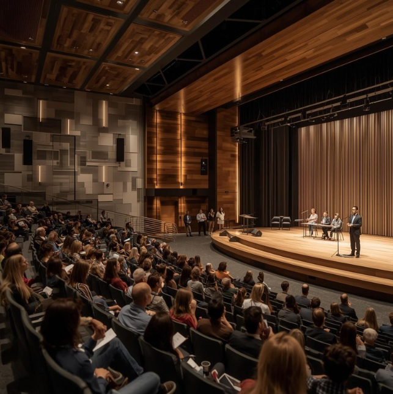
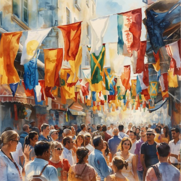
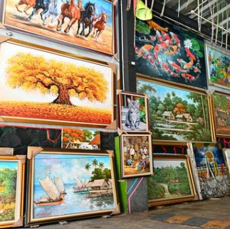

ICE Challenges
Prophet Card
In this challenge, we created a profile card for a prophet. I made one in memory of President Nelson. This challenge was my beginning to creating wireframes and start to positioning this where I wanted them to be. I especially became more familiar with padding and margins during this. This was one of the few where I worked in HTML and CSS.

Favorite Devotional
In this challenge, I learned how to use tables and forms to collect the data for favorite devotionals. I learned how to make them and position them accordingly to my preference in CSS. I also added a link at the bottome to other devotionals that you could watch. I worked in both HTML and CSS in this challenge as well.
Holiday Page
In this challenge, I designed my first full web page, and it's dedicated to Valentine's Day! I worked solely in CSS and chose the colors, positions, sizes, borders, fonts, and I used grids for the first time to help me position things.
Positioning Activity
In this challenge, I also worked solely in CSS and officailly began using grids. I used grids and its properties such as grid-column and grid-row to manipulate, alter, and align the div's/classes into the positions and shapes that I was instructed to do.

Country Flags
In this challenge, I used the grid alignment properties in different layouts to put together different flags from div's in HTML that were already there. I used grid, columns, rows, gaps and color properties in CSS to get the div's where I wanted them, In the shape I wanted, and in the color I wanted. I also created two extra flags so I added more div's into the HTML.

Gallery
In this challenge, I only worked in HTML. Actually, all I did for this challenge was reducing the image sizes to take up less space and therefore, load faster. I brought each image file to a photo editor called "Photopea", and reduced the size of the image before saving this smaller image file and replacing it in the HTML. Now the program loads faster.
Signup Form
This was my final ICE challenge. In this challenge, I styled a form where you can sign up for getting a scripture a day. I used grids, positions, padding, margins, colors, images, forms, and more. I made sure I aligned thins right, that I had the right text above the image, and even made it adaptable for different screens. I worked in both HTML and CSS to style and organize everything.